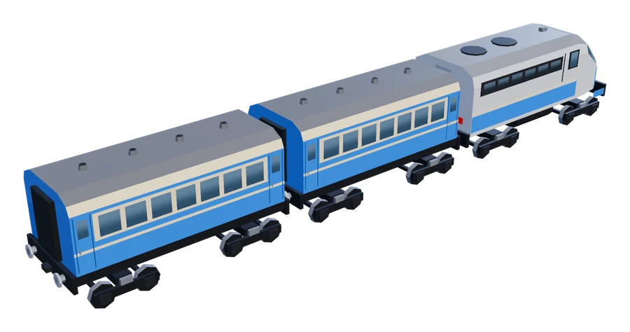

Trens
Todas as locomotivas.
Uma locomotiva puxa vagões de qualquer carga que possa levar. O preço é só o da locomotiva.
 Kestrel Steam1950 · 99 km/h
Kestrel Steam1950 · 99 km/h Brigand Tank Engine1950 · 81 km/h
Brigand Tank Engine1950 · 81 km/h Highland Mogul1954 · 108 km/h
Highland Mogul1954 · 108 km/h Meridian Diesel1960 · 147 km/h
Meridian Diesel1960 · 147 km/h Sparrow Railcar1966 · 168 km/h
Sparrow Railcar1966 · 168 km/h
Vanguard Express1975 · 204 km/h Ironclad Freight Diesel1979 · 162 km/h
Ironclad Freight Diesel1979 · 162 km/h Aurora Electric1985 · 245 km/h
Aurora Electric1985 · 245 km/h Swift High-Speed1995 · 315 km/h
Swift High-Speed1995 · 315 km/h Swallow Tilting Express2003 · 264 km/h
Swallow Tilting Express2003 · 264 km/h Zephyr Hydrogen2022 · 240 km/h
Zephyr Hydrogen2022 · 240 km/h Tempest Electric Freight2024 · 222 km/h
Tempest Electric Freight2024 · 222 km/h
| Modelo | Desde | Leva | Capacidade | Velocidade | Preço | Operação, por ano |
|---|---|---|---|---|---|---|
| Kestrel Steam | 1950 | Qualquer coisa | até 6 vagões | 99 km/h | $ 38.000 | $ 5.200 |
| Brigand Tank Engine | 1950 | Qualquer coisa | até 4 vagões | 81 km/h | $ 24.000 | $ 3.200 |
| Highland Mogul | 1954 | Qualquer coisa | até 9 vagões | 108 km/h | $ 52.000 | $ 6.400 |
| Meridian Diesel | 1960 | Qualquer coisa | até 8 vagões | 147 km/h | $ 74.000 | $ 8.400 |
| Sparrow Railcar | 1966 | Passageiros, Correio, Jornais | até 2 vagões | 168 km/h | $ 46.000 | $ 3.600 |
| Vanguard Express | 1975 | Qualquer coisa | até 10 vagões | 204 km/h | $ 125.000 | $ 11.000 |
| Ironclad Freight Diesel | 1979 | Qualquer coisa | até 12 vagões | 162 km/h | $ 98.000 | $ 9.800 |
| Aurora Electric | 1985 | Qualquer coisa | até 12 vagões | 245 km/h | $ 165.000 | $ 9.000 |
| Swift High-Speed | 1995 | Passageiros, Correio | até 10 vagões | 315 km/h | $ 245.000 | $ 14.000 |
| Swallow Tilting Express | 2003 | Passageiros, Correio | até 8 vagões | 264 km/h | $ 180.000 | $ 11.000 |
| Zephyr Hydrogen | 2022 | Qualquer coisa | até 10 vagões | 240 km/h | $ 190.000 | $ 6.200 |
| Tempest Electric Freight | 2024 | Qualquer coisa | até 14 vagões | 222 km/h | $ 210.000 | $ 7.000 |
- Cada vagão leva 40 passageiros, 40 jornais, 20 eletrônicos, 10 carros, ou 30 unidades de qualquer outra coisa, e soma $ 6.500 ao preço e $ 450 por ano.
- As locomotivas a vapor perdem 3% da velocidade para cada vagão que puxam.
- Os modelos elétricos precisam de fiação aérea: Aurora Electric, Swift High-Speed, Tempest Electric Freight.
- Qualquer carga é toda carga menos passageiros, carros. Qualquer carga a granel também exclui correio, jornais.
- A vida útil deste tipo é de 25 anos: veja Envelhecimento e renovação.